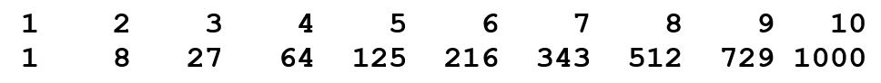
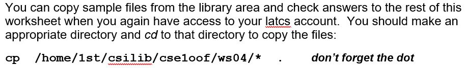
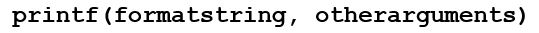
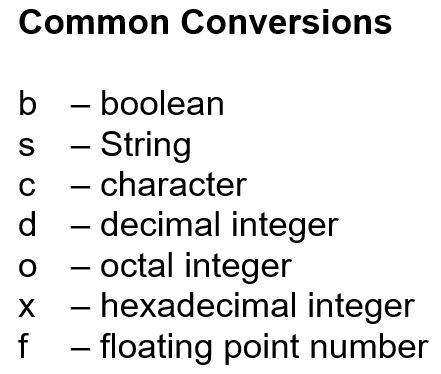
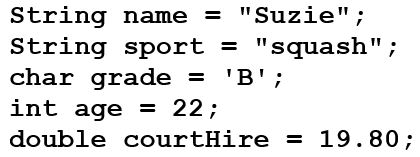
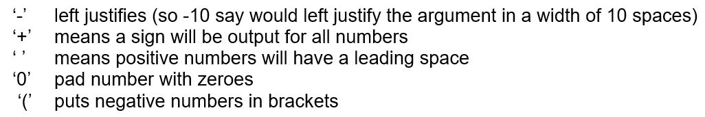
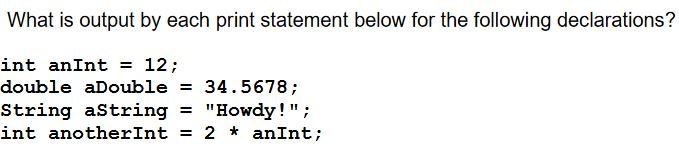
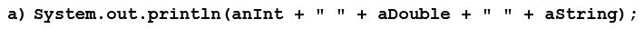
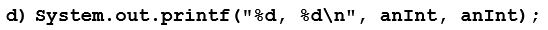

CSE1OOF
Workshop 4
Press SHIFT ? for help
Press f for fullscreen
Press CAPS for pointer
While Loops
Write a program using while loops to output the first 10 integers on the first line and their cubes on the second line.Note that we do not have an easy way to format the output yet…. We will learn about that next…
 
Solution
public class Main {
public static void main(String[] args) {
int i = 1;
while(i < 11)
{
System.out.print("\t" + i);
i++;
}
System.out.println("\n");
i = 1;
while(i < 11)
{
System.out.print("\t" + i*i*i);
i ++;
}
}
}
printf
There are several ways of formatting output in Java - one way is to use the printf() method (which can be called with System.out). Note the f in printf means formatted
The first argument is the output string. Any other arguments are a list of values to be put into the output string at certain given places
So, the output string (first argument) contains
printf Example
In this example, %s, %d and %.2f are the format specifiers for the last 3 arguments, dogName (a String), dogAge (an int) and weight (a double).%s is a format specifier related to a String, %d is a format specifier related to an int, and %f is a format specifier related to a double
String dogName = "Harry";
int dogAge = 6;
double weight = 60;
System.out.printf("My dog %s is %d years old and weighs %.2f kgs\n",
dogName, dogAge, weight);
My dog Harry is 6 years old and weighs 60.00 kgs
Format specifiers
Start with a % symbol
End with a conversion character (e.g. s, d or f) that determines what type of value will be output
There may be additional optional information between the % and the conversion character.
End with a conversion character (e.g. s, d or f) that determines what type of value will be output
There may be additional optional information between the % and the conversion character.

Additional information – an Argument Index
The first additional optional information is the argument index (a number followed by a $ character – the number is the position of the argument in the list of values).This allows us to use one of the arguments in the list multiple times or out of order in the output (see the code below in Example1WS04.java from the library area).
String dogName = "Harry";
int dogAge = 6;
double weight = 60;
System.out.printf("My dog %1$s is %2$d years old. I love %1$s.\n",
dogName, dogAge, weight);
My dog Harry is 6 years old. I love Harry.
#(Note we don’t have to use all the values in the argument list)
your turn....
Suzie plays squash.
System.out.printf("%s plays %s.\n", name, sport);
your turn....
22 year old Suzie plays B grade squash.
System.out.printf("%d year old %s plays %c grade %s\n",
age, name, grade, sport);
your turn....
Court hire is 19.800000. Suzie must pay 19.800000 to play.
System.out.printf("Court hire is %f. %s must pay %1$f to play.\n",
courtHire, name);
Flags
The second additional optional information is called a flag – certain characters are used (between the % and the conversion character) as flags which have set meanings to format the output
Flag examples part1
int number1 = 23;
int number2 = -145;
double number3 = 12321.345;
double number4 = -99.9;
System.out.printf("1: %d, 2: %d, 3: %f, 4: %f\n",
number1, number2, number3, number4);
System.out.printf("2: %-10d, 2: %-10d, 3: %-10f, 4: %-10f\n",
number1, number2, number3, number4);
System.out.printf("3: %+d, 2: %+d, 3: %+f, 4: %+f\n",
number1, number2, number3, number4);
System.out.printf("4: % d, 2: % d, 3: % f, 4: % f\n",
number1, number2, number3, number4);
Flag examples part2
int number1 = 23;
int number2 = -145;
double number3 = 12321.345;
double number4 = -99.9;
System.out.printf("5: %010d, 2: %010d, 3: %010f, 4: %010f\n",
number1, number2, number3, number4);
System.out.printf("6: %,d, 2: %,d, 3: %,f, 4: %,f\n",
number1, number2, number3, number4);
System.out.printf("7: %(d, 2: %(d, 3: %(f, 4: %(f\n",
number1, number2, number3, number4);
System.out.printf("8: %+(d, 2: %+(d, 3: %+(f, 4: %+(f\n",
number1, number2, number3, number4);
System.out.printf("9: %(+d, 2: %(+d, 3: %(+f, 4: %(+f\n",
number1, number2, number3, number4);
Width and precision
Width is the minimum number of spaces to use when outputting a valuePrecision is the number of decimal places after the decimal point in floating point numbers. For strings, precision is the maximum number of characters to be output
#Example 3
String s1 = "Hello Out There!";
String s2 = "hi";
int n1 = 13;
double d1 = 123.4567;
System.out.printf("s1: %s, s2: %s, n1: %d d1: %f\n",s1, s2, n1, d1);
System.out.printf("s1: %10s, s2: %10s, n1: %10d d1: %10f\n",s1, s2, n1, d1);
System.out.printf("s1: %-10s, s2: %-10s, n1: %-10d d1: %-10f\n", s1, s2, n1, d1);
System.out.printf("s1: %10.3s, s2: %10.3s, n1: %10d d1: %10.3f\n",s1, s2, n1, d1);
System.out.printf("s1: %3.10s, s2: %3.10s\n", s1, s2);
Your turn...
 
12 34.5678 Howdy!
This is an int: 12.
This is an int: 12.This is an int: 12.

12, 12
12, 24
12, 24, 12, 36
12, 24
12, 24|
12 , 24 |
0000000012, 0000000024|
12.000000, 34.567800|
12.00, 34.57|
120000.00, 345678.00|
120,000.00, 345,678.00|
12,000,000.00, 34,567,800.00|
+12.000000, +34.567800|
Howdy!, Hi There, Hello
Hello, Howdy!, Hi There
Hi There, Hello, Howdy!
Hi There , Hello , Howdy!